import torch
import torchvision.transforms as transforms
from torch.optim import lr_scheduler
import numpy as np
import pandas as pd
import matplotlib.pyplot as plt
import fastcore.all as fc
from functools import partial
from collections import Counter
from minai import *
from pilus_project.yolov1 import *Yolo v1 on bacteria
Finetuning yolov1 on bacteria data
set_seed(42)transform = Compose([transforms.Resize((448, 448)), transforms.ToTensor(),])
IMG_DIR = "../data/images"
LABEL_DIR = "../data/labels"
bs = 8!ls ..8examples.csv _proc pilus_project test.csv
8examples_val.csv data pilus_project.egg-info train.all.txt
LICENSE generate_csv.py pyproject.toml train.csv
MANIFEST.in nbs settings.ini voc_dataset.sh
README.md old_txt_files setup.py voc_label.pypd.read_csv("../8examples.csv")| img | label | |
|---|---|---|
| 0 | 000007.jpg | 000007.txt |
| 1 | 000009.jpg | 000009.txt |
| 2 | 000016.jpg | 000016.txt |
| 3 | 000019.jpg | 000019.txt |
| 4 | 000020.jpg | 000020.txt |
| 5 | 000021.jpg | 000021.txt |
| 6 | 000122.jpg | 000122.txt |
| 7 | 000129.jpg | 000129.txt |
trn_ds = VOCDataset("../8examples.csv",
transform=transform,
img_dir=IMG_DIR,
label_dir=LABEL_DIR)
x0, y0 = trn_ds[0]
plot_image(x0, cellboxes_to_boxes(y0.unsqueeze(0))[0])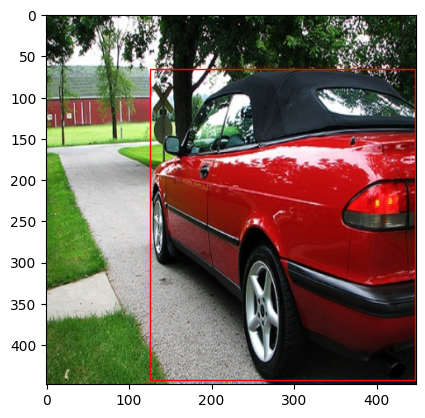
# examples_val_8 = pd.read_csv("../test.csv").iloc[:8]
# examples_val_8# examples_val_8.to_csv('../8examples_val.csv', index=False)val_ds = VOCDataset(
"../8examples_val.csv", transform=transform, img_dir=IMG_DIR, label_dir=LABEL_DIR,
)
x0, y0 = val_ds[0]
plot_image(x0, cellboxes_to_boxes(y0.unsqueeze(0))[0])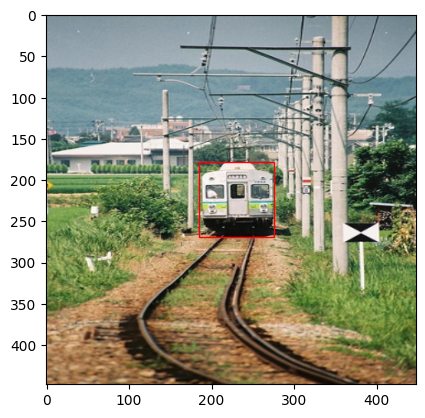
len(val_ds)8trn_dl, val_dl = get_dls(trn_ds, val_ds, bs)
xb, yb = next(iter(trn_dl))
xb.shape, yb.shape(torch.Size([8, 3, 448, 448]), torch.Size([8, 7, 7, 30]))dls = DataLoaders(trn_dl, val_dl)Learner
class MeanAP:
def __init__(self, num_classes=1, epsilon=1e-6, threshold=0.4, iou_threshold=0.5, box_format='midpoint'):
self.num_classes = num_classes
self.epsilon = epsilon
self.threshold = threshold
self.iou_threshold = iou_threshold
self.box_format = box_format
self.average_precisions = []
def reset(self):
self.average_precisions = []
def compute(self):
return sum(self.average_precisions) / len(self.average_precisions)
def update(self, pred, label):
# `get_bboxes` part
all_pred_boxes = []
all_true_boxes = []
train_idx = 0
batch_size = pred.shape[0]
pred_boxes = cellboxes_to_boxes(pred)
true_boxes = cellboxes_to_boxes(label)
for idx in range(batch_size):
nms_boxes = non_max_suppression(
pred_boxes[idx],
iou_threshold=self.iou_threshold,
threshold=self.threshold,
box_format=self.box_format,
)
for nms_box in nms_boxes:
all_pred_boxes.append([train_idx] + nms_box)
for box in true_boxes[idx]:
# many will get converted to 0 pred
if box[1] > self.threshold:
all_true_boxes.append([train_idx] + box)
pred_boxes = all_pred_boxes
true_boxes = all_true_boxes
for c in range(self.num_classes):
detections = []
ground_truths = []
# Go through all predictions and targets,
# and only add the ones that belong to the
# current class c
for detection in pred_boxes:
if detection[1] == c:
detections.append(detection)
for true_box in true_boxes:
if true_box[1] == c:
ground_truths.append(true_box)
# find the amount of bboxes for each training example
# Counter here finds how many ground truth bboxes we get
# for each training example, so let's say img 0 has 3,
# img 1 has 5 then we will obtain a dictionary with:
# amount_bboxes = {0:3, 1:5}
amount_bboxes = Counter([gt[0] for gt in ground_truths])
# We then go through each key, val in this dictionary
# and convert to the following (w.r.t same example):
# ammount_bboxes = {0:torch.tensor[0,0,0], 1:torch.tensor[0,0,0,0,0]}
for key, val in amount_bboxes.items():
amount_bboxes[key] = torch.zeros(val)
# sort by box probabilities which is index 2
detections.sort(key=lambda x: x[2], reverse=True)
TP = torch.zeros((len(detections)))
FP = torch.zeros((len(detections)))
total_true_bboxes = len(ground_truths)
# If none exists for this class then we can safely skip
if total_true_bboxes == 0:
continue
for detection_idx, detection in enumerate(detections):
# Only take out the ground_truths that have the same
# training idx as detection
ground_truth_img = [
bbox for bbox in ground_truths if bbox[0] == detection[0]
]
num_gts = len(ground_truth_img)
best_iou = 0
for idx, gt in enumerate(ground_truth_img):
iou = intersection_over_union(
torch.tensor(detection[3:]),
torch.tensor(gt[3:]),
box_format=self.box_format,
)
if iou > best_iou:
best_iou = iou
best_gt_idx = idx
if best_iou > self.iou_threshold:
# only detect ground truth detection once
if amount_bboxes[detection[0]][best_gt_idx] == 0:
# true positive and add this bounding box to seen
TP[detection_idx] = 1
amount_bboxes[detection[0]][best_gt_idx] = 1
else:
FP[detection_idx] = 1
# if IOU is lower then the detection is a false positive
else:
FP[detection_idx] = 1
TP_cumsum = torch.cumsum(TP, dim=0)
FP_cumsum = torch.cumsum(FP, dim=0)
recalls = TP_cumsum / (total_true_bboxes + self.epsilon)
precisions = torch.divide(TP_cumsum, (TP_cumsum + FP_cumsum + self.epsilon))
precisions = torch.cat((torch.tensor([1]), precisions))
recalls = torch.cat((torch.tensor([0]), recalls))
# torch.trapz for numerical integration
self.average_precisions.append(torch.trapz(precisions, recalls))cbs = [
TrainCB(),
DeviceCB(),
MetricsCB(MeanAP(num_classes=20)),
]
opt = partial(torch.optim.AdamW, betas=(0.9,0.95), eps=1e-5)model = Yolov1(split_size=7, num_boxes=2, num_classes=20)
lr, epochs = 1e-5, 150
tmax = epochs * len(dls.train)
sched = partial(lr_scheduler.OneCycleLR, max_lr=lr, total_steps=tmax)
xtra = [BatchSchedCB(sched)]
learn = Learner(model, dls, YoloLoss(), lr=lr, cbs=cbs+xtra, opt_func=torch.optim.AdamW)learn.show_image_batch()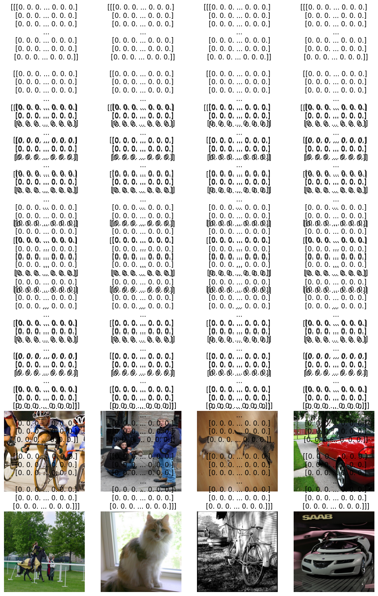
learn.fit(epochs, cbs=[ProgressCB(plot=True)])
0.00% [0/150 00:00<?]
| MeanAP | loss | epoch | train | time |
|---|---|---|---|---|
| 0.000 | 648.640 | 0 | train | 00:04 |
0.00% [0/1 00:00<?]
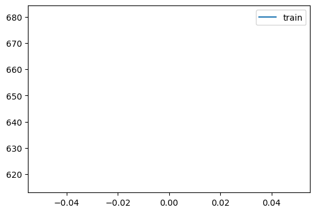
--------------------------------------------------------------------------- KeyboardInterrupt Traceback (most recent call last) Cell In[15], line 1 ----> 1 learn.fit(epochs, cbs=[ProgressCB(plot=True)]) File ~/miniforge3/envs/torch_latest/lib/python3.11/site-packages/minai/core.py:264, in Learner.fit(self, n_epochs, train, valid, cbs, lr) 262 if lr is None: lr = self.lr 263 if self.opt_func: self.opt = self.opt_func(self.model.parameters(), lr) --> 264 self._fit(train, valid) 265 finally: 266 for cb in cbs: self.cbs.remove(cb) File ~/miniforge3/envs/torch_latest/lib/python3.11/site-packages/minai/core.py:198, in with_cbs.__call__.<locals>._f(o, *args, **kwargs) 196 try: 197 o.callback(f'before_{self.nm}') --> 198 f(o, *args, **kwargs) 199 o.callback(f'after_{self.nm}') 200 except globals()[f'Cancel{self.nm.title()}Exception']: pass File ~/miniforge3/envs/torch_latest/lib/python3.11/site-packages/minai/core.py:254, in Learner._fit(self, train, valid) 252 if train: self.one_epoch(True) 253 if valid: --> 254 with torch.inference_mode(): self.one_epoch(False) File ~/miniforge3/envs/torch_latest/lib/python3.11/site-packages/minai/core.py:245, in Learner.one_epoch(self, training) 243 self.model.train(training) 244 self.dl = self.train_dl if training else self.dls.valid --> 245 self._one_epoch() File ~/miniforge3/envs/torch_latest/lib/python3.11/site-packages/minai/core.py:198, in with_cbs.__call__.<locals>._f(o, *args, **kwargs) 196 try: 197 o.callback(f'before_{self.nm}') --> 198 f(o, *args, **kwargs) 199 o.callback(f'after_{self.nm}') 200 except globals()[f'Cancel{self.nm.title()}Exception']: pass File ~/miniforge3/envs/torch_latest/lib/python3.11/site-packages/minai/core.py:240, in Learner._one_epoch(self) 238 @with_cbs('epoch') 239 def _one_epoch(self): --> 240 for self.iter,self.batch in enumerate(self.dl): self._one_batch() File ~/miniforge3/envs/torch_latest/lib/python3.11/site-packages/fastprogress/fastprogress.py:41, in ProgressBar.__iter__(self) 39 if self.total != 0: self.update(0) 40 try: ---> 41 for i,o in enumerate(self.gen): 42 if self.total and i >= self.total: break 43 yield o File ~/miniforge3/envs/torch_latest/lib/python3.11/site-packages/torch/utils/data/dataloader.py:701, in _BaseDataLoaderIter.__next__(self) 698 if self._sampler_iter is None: 699 # TODO(https://github.com/pytorch/pytorch/issues/76750) 700 self._reset() # type: ignore[call-arg] --> 701 data = self._next_data() 702 self._num_yielded += 1 703 if ( 704 self._dataset_kind == _DatasetKind.Iterable 705 and self._IterableDataset_len_called is not None 706 and self._num_yielded > self._IterableDataset_len_called 707 ): File ~/miniforge3/envs/torch_latest/lib/python3.11/site-packages/torch/utils/data/dataloader.py:757, in _SingleProcessDataLoaderIter._next_data(self) 755 def _next_data(self): 756 index = self._next_index() # may raise StopIteration --> 757 data = self._dataset_fetcher.fetch(index) # may raise StopIteration 758 if self._pin_memory: 759 data = _utils.pin_memory.pin_memory(data, self._pin_memory_device) File ~/miniforge3/envs/torch_latest/lib/python3.11/site-packages/torch/utils/data/_utils/fetch.py:52, in _MapDatasetFetcher.fetch(self, possibly_batched_index) 50 data = self.dataset.__getitems__(possibly_batched_index) 51 else: ---> 52 data = [self.dataset[idx] for idx in possibly_batched_index] 53 else: 54 data = self.dataset[possibly_batched_index] File ~/miniforge3/envs/torch_latest/lib/python3.11/site-packages/torch/utils/data/_utils/fetch.py:52, in <listcomp>(.0) 50 data = self.dataset.__getitems__(possibly_batched_index) 51 else: ---> 52 data = [self.dataset[idx] for idx in possibly_batched_index] 53 else: 54 data = self.dataset[possibly_batched_index] File ~/git/pilus_project/pilus_project/yolov1.py:405, in VOCDataset.__getitem__(self, index) 401 boxes = torch.tensor(boxes) 403 if self.transform: 404 # image = self.transform(image) --> 405 image, boxes = self.transform(image, boxes) 407 # Convert To Cells 408 label_matrix = torch.zeros((self.S, self.S, self.C + 5 * self.B)) File ~/git/pilus_project/pilus_project/yolov1.py:692, in Compose.__call__(self, img, bboxes) 690 def __call__(self, img, bboxes): 691 for t in self.transforms: --> 692 img, bboxes = t(img), bboxes 694 return img, bboxes File ~/miniforge3/envs/torch_latest/lib/python3.11/site-packages/torch/nn/modules/module.py:1736, in Module._wrapped_call_impl(self, *args, **kwargs) 1734 return self._compiled_call_impl(*args, **kwargs) # type: ignore[misc] 1735 else: -> 1736 return self._call_impl(*args, **kwargs) File ~/miniforge3/envs/torch_latest/lib/python3.11/site-packages/torch/nn/modules/module.py:1747, in Module._call_impl(self, *args, **kwargs) 1742 # If we don't have any hooks, we want to skip the rest of the logic in 1743 # this function, and just call forward. 1744 if not (self._backward_hooks or self._backward_pre_hooks or self._forward_hooks or self._forward_pre_hooks 1745 or _global_backward_pre_hooks or _global_backward_hooks 1746 or _global_forward_hooks or _global_forward_pre_hooks): -> 1747 return forward_call(*args, **kwargs) 1749 result = None 1750 called_always_called_hooks = set() File ~/miniforge3/envs/torch_latest/lib/python3.11/site-packages/torchvision/transforms/transforms.py:354, in Resize.forward(self, img) 346 def forward(self, img): 347 """ 348 Args: 349 img (PIL Image or Tensor): Image to be scaled. (...) 352 PIL Image or Tensor: Rescaled image. 353 """ --> 354 return F.resize(img, self.size, self.interpolation, self.max_size, self.antialias) File ~/miniforge3/envs/torch_latest/lib/python3.11/site-packages/torchvision/transforms/functional.py:477, in resize(img, size, interpolation, max_size, antialias) 475 warnings.warn("Anti-alias option is always applied for PIL Image input. Argument antialias is ignored.") 476 pil_interpolation = pil_modes_mapping[interpolation] --> 477 return F_pil.resize(img, size=output_size, interpolation=pil_interpolation) 479 return F_t.resize(img, size=output_size, interpolation=interpolation.value, antialias=antialias) File ~/miniforge3/envs/torch_latest/lib/python3.11/site-packages/torchvision/transforms/_functional_pil.py:250, in resize(img, size, interpolation) 247 if not (isinstance(size, list) and len(size) == 2): 248 raise TypeError(f"Got inappropriate size arg: {size}") --> 250 return img.resize(tuple(size[::-1]), interpolation) File ~/miniforge3/envs/torch_latest/lib/python3.11/site-packages/PIL/Image.py:2293, in Image.resize(self, size, resample, box, reducing_gap) 2290 msg = "reducing_gap must be 1.0 or greater" 2291 raise ValueError(msg) -> 2293 self.load() 2294 if box is None: 2295 box = (0, 0) + self.size File ~/miniforge3/envs/torch_latest/lib/python3.11/site-packages/PIL/ImageFile.py:293, in ImageFile.load(self) 290 raise OSError(msg) 292 b = b + s --> 293 n, err_code = decoder.decode(b) 294 if n < 0: 295 break KeyboardInterrupt:
Testing
Let’s see if the model learned about bounding boxes for the training set.
Loading the weight from previous one:
# learn.opt_func = torch.optim.Adam(
# learn.model.parameters(), lr=lr, weight_decay=0
# )
# load_checkpoint(torch.load("overfit.pth.tar"), learn.model, learn.opt_func)learn.model.train(False)
for i in range(8):
x0, y0 = trn_ds[i]
bboxes = cellboxes_to_boxes(learn.model(x0.unsqueeze(0).to(DEVICE)))
bboxes = non_max_suppression(bboxes[0], iou_threshold=0.5, threshold=0.4, box_format='midpoint')
plot_image(x0, bboxes)
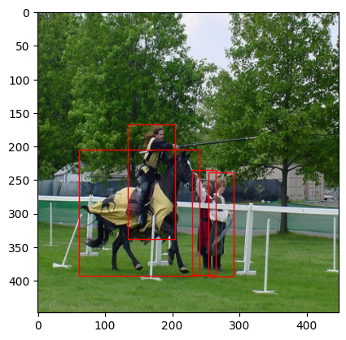
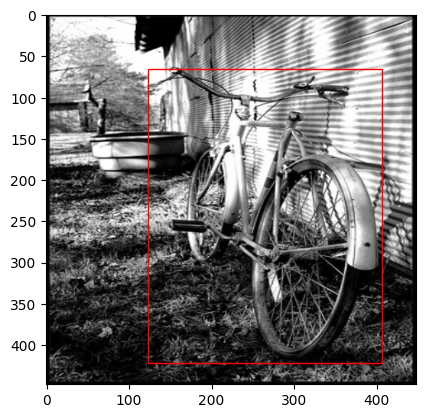
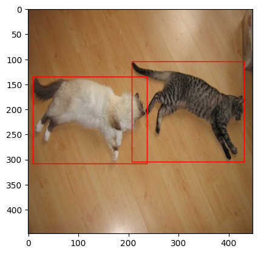
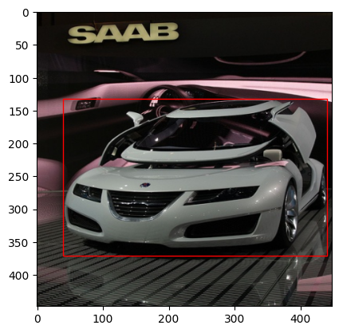
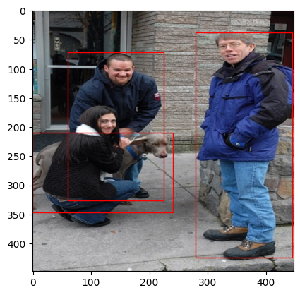
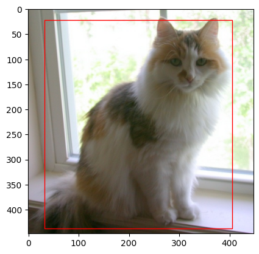
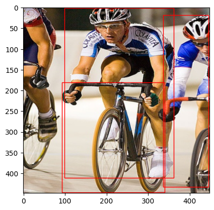
learn.model.train(False)
for i in range(8):
x0, y0 = val_ds[i]
bboxes = cellboxes_to_boxes(learn.model(x0.unsqueeze(0).to(DEVICE)))
bboxes = non_max_suppression(bboxes[0], iou_threshold=0.5, threshold=0.4, box_format='midpoint')
plot_image(x0, bboxes)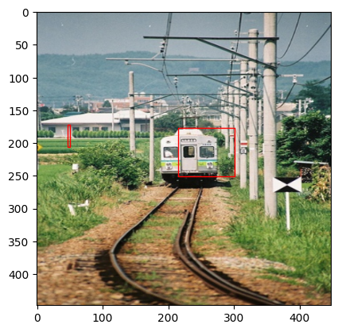
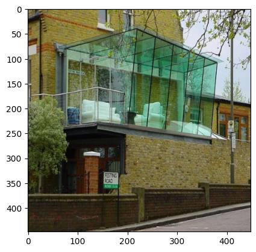
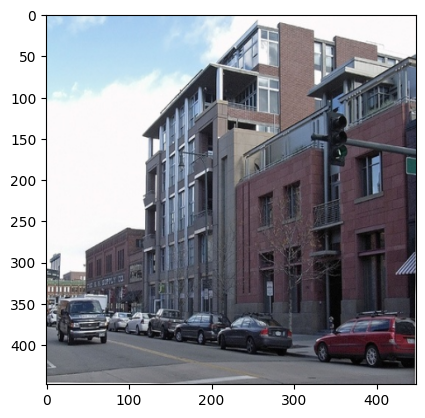
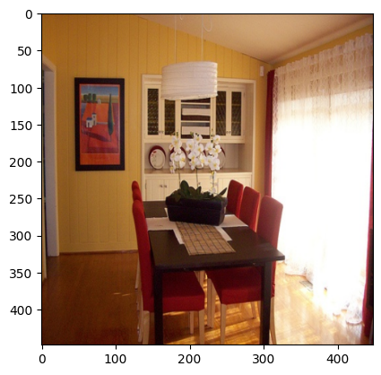
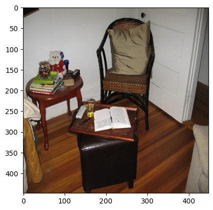
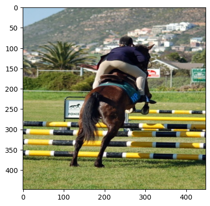
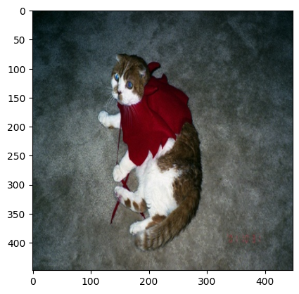
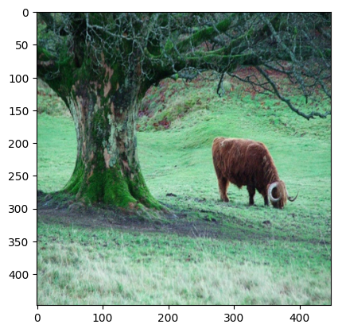